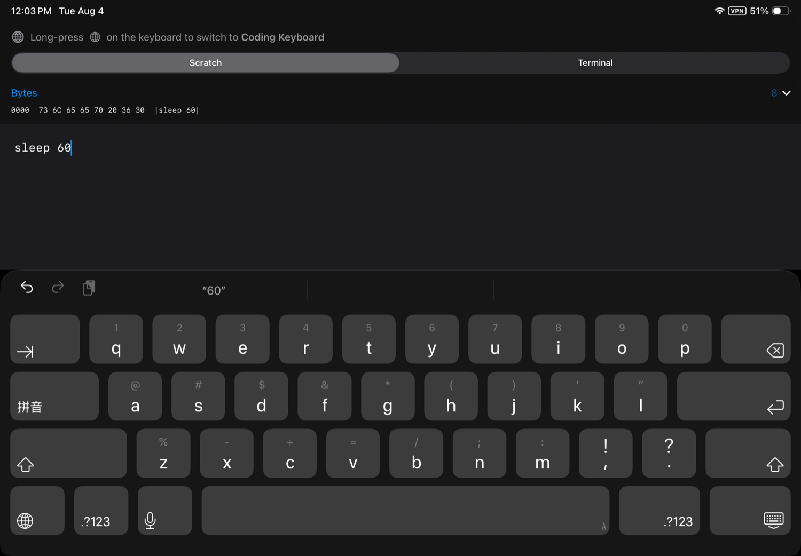

Coding Keyboard.
An iOS keyboard laid out the way a desktop keyboard is laid out. In landscape and on iPad, the top four rows are identical to a full-size keyboard, key for key — so you already know where everything is.
The layout
This is the landscape layout, drawn here rather than photographed. Press the button to see what terminal mode adds.
Why
The stock iPhone keyboard hides the braces, square brackets, backslash, pipe, backtick and tilde behind two levels of page switching, and has no Tab key at all. iPad fares better, but only on the largest screens — on an 11-inch iPad the system keyboard has no number row, no brackets, no backslash and no arrow keys either.
That is fine for prose and miserable for code, SSH sessions and config files. This one puts them all on the first layer, and prints every shifted value on the key that produces it.


Terminal mode
A terminal does not receive key events — the PTY sees a byte stream. So terminal mode sends the bytes a real keyboard would have produced, and a shell cannot tell the difference.
| Key | Normal | Terminal |
|---|---|---|
| Return | newline | \r — CR, 0x0D |
| ⌃ + letter | — | the C0 byte: ⌃C = 0x03, ⌃D = 0x04, ⌃R = 0x12 |
| ⌥ + key | — | ESC then the key — Meta is an ESC prefix |
| ← → | move the caret | ESC [ D · ESC [ C |
| ↑ ↓ | — | ESC [ A · ESC [ B |
| Home / End | — | ESC [ H · ESC [ F |
| esc | — | 0x1B |
ctrl and opt latch the way Shift does — tap, hold, or double-tap to lock — and stack with it and with each other. It works wherever the host app forwards inserted text to its terminal, and the app ships an echo terminal, a real VT100 emulator with no shell behind it, so you can see exactly what each key sends before you rely on it anywhere else.

Privacy
The keyboard does not request Full Access. Without it, iOS grants a keyboard extension no network capability at all — it cannot send your keystrokes anywhere because it cannot send anything anywhere. That is enforced by the operating system, not promised in a policy.
No data is collected. The keyboard extension has no analytics, no crash reporting and no third-party SDKs. The source is on GitHub under the MIT license, so none of the above has to be taken on faith.
What it doesn't do
No autocorrect, predictive text or swipe typing. No emoji key — the globe key switches back to your usual keyboard. No haptic feedback, because iOS only permits it with Full Access, which this keyboard does not request. US ASCII layout only.